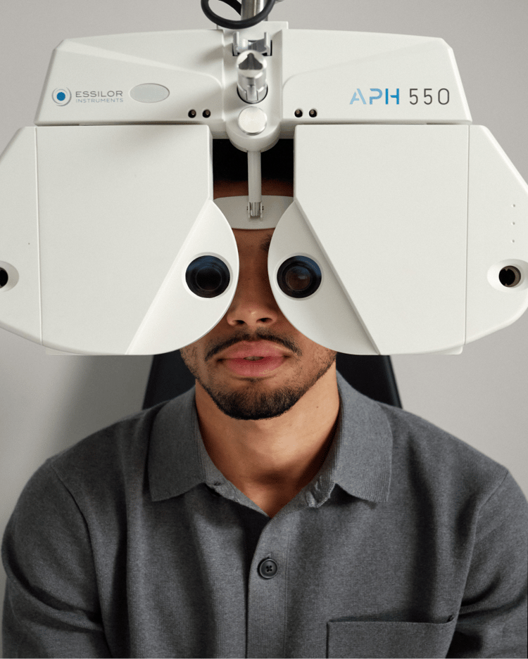
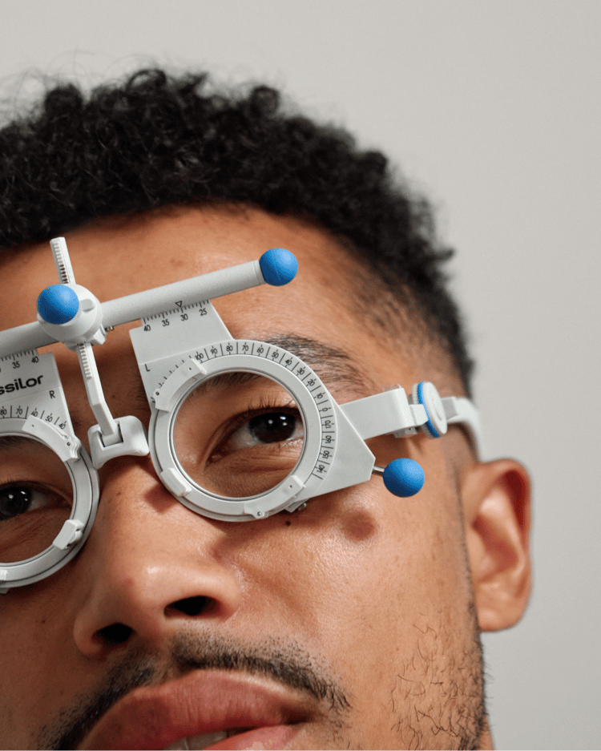

Boek een oogmeting bij een van onze opticiens
Is een oogmeting echt nodig? Jazeker! Ook als je denkt dat je ogen prima zijn, is het belangrijk om ze elke twee jaar te laten checken. Bij onze ervaren opticiens ben je in goede handen - met de modernste apparatuur zorgen we voor een snelle en prettige meting. En het kost je helemaal niks.
Boek nuHet is tijd voor een oogmeting als:
- Je soms met je ogen moet knijpen om scherp te zien
- Je dagelijks veel schermtijd hebt
- Je last hebt van hoofdpijn
- Het twee jaar of langer geleden is sinds je laatste oogmeting
- Je ogen moe, droog en/of geïrriteerd aanvoelen
- Je autorijdt, fietst en/of wandelt
Wat gebeurt er tijdens een oogmeting?
Onze opticien stelt je eerst enkele screeningsvragen, waarna zij beide ogen zullen opmeten om je sterkte te bepalen.
-

Je zult letters van een scherm lezen, kleuren onderscheiden, veel knipperen en naar afbeeldingen kijken. Het is een heel ontspannen en informatief proces.
-

Dit alles gebeurt met behulp van de beste apparatuur uit de industrie. Best gaaf, toch?
-
Na je gratis afspraak ontvang je direct je brilrecept en kun je je nieuwe bril uitkiezen.
Frequently Asked Questions
-
Wat is een oogmeting?
Een oogmeting is meer dan alleen een check van je zicht – het is een uitgebreid gezondheidsonderzoek van je ogen, waarbij we met de modernste technologie ook kijken naar mogelijke oogaandoeningen zonder symptomen. Let op: dit is niet voor contactlenzen of daaraan gerelateerde problemen. Het hoofddoel van een oogmeting is het onderzoeken van veelvoorkomende refractieafwijkingen, zoals:
- Bijziendheid (myopie): Moeite met veraf zien
- Verziendheid (hyperopie): Moeite met dichtbij zien
- Astigmatisme: Onscherp zicht door een onregelmatig gebogen hoornvlies
- Ouderdomsverziendheid
Na de meting vertellen we je precies hoeveel correctie je nodig hebt in je glazen. Deze correcties worden uitgedrukt in een reeks getallen: je sterkte.
-
Wanneer moet ik een oogmeting laten doen?
Ook als je ogen prima aanvoelen, raden we aan om ze elke twee jaar te laten checken. Je ogen veranderen namelijk met de tijd, dus het is belangrijk om te weten hoe het ermee gaat. Heb je last van je ogen of vermoed je dat je sterkte is veranderd? Maak dan zo snel mogelijk een afspraak om de oorzaak te achterhalen.
-
Hoeveel kost een oogmeting?
Een oogmeting is bij ons helemaal gratis.
-
Wanneer kan ik een oogmeting boeken?
Je kunt direct hier een oogmeting inplannen bij de dichtstbijzijnde winkel.
-
Hoe lang duurt een oogmeting?
Je afspraak duurt ongeveer 20 minuten (voor zowel enkelvoudige als varifocale glazen). Dus, kom even langs tijdens je lunchpauze.
-
Hoe vaak moet ik een oogmeting doen?
We raden aan om iedere twee jaar je ogen te laten testen, zelfs als ze 100% oké voelen. Ogen veranderen met de tijd dus het is belangrijk om dit geregeld te laten controleren.
-
Speelt mijn leeftijd een rol?
Na je 40e beginnen je ogen sneller te veranderen. Daarom raden we aan om vanaf die leeftijd vaker langs te komen voor een meting (één keer per jaar, zelfs).
-
Bieden jullie oogmetingen aan voor contactlezen?
Nee, helaas bieden we geen oogmetingen aan voor contactlenzen.
-
Hoe vind ik een opticien bij mij in de buurt?
Dat is heel simpel. Klik op hier en selecteer je locatie om de dichtstbijzijnde winkel te vinden. Volg de stappen en kies een tijdslot. Je kunt ons ook altijd bellen of gewoon langskomen in de winkel.
Klaar om je ogen te laten testen?
Vind een winkel bij jou in de buurt en boek jouw oogmeting.
Boek een oogmeting